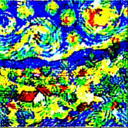
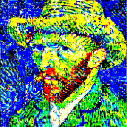

Overview
A personal project to generate jigsaw puzzles that can be assembled in exactly two non-trivial ways. It was inspired by Matt Parker's video "How can a jigsaw have two distinct solutions" and by diffusion illusions (Burgert et al.). Where Parker's brute-force search tops out around 6×6, encoding the problem as a SAT instance scales it to 15×15 pieces.
The Two Solutions
The only two valid arrangements of one generated 15×15 piece set:
Solution 1

Solution 2

Diffusion Illusion
Mapping a different image onto each solution with diffusion illusions, so the same pieces reveal two distinct pictures (Van Gogh style, 512×512):
Solution 1

Solution 2

How it works
The generator turns the puzzle into a Boolean satisfiability (SAT) problem and solves it:
Generate & encode
Start from a random valid puzzle and encode each piece's edge-connection types and grid positions as SAT variables and constraints.
Rule out trivial solutions
Add constraints that disallow global rotations and simple row/column swaps, so the second solution is genuinely different.
Solve & verify
Use the pySAT solver to find the second solution and confirm no third one exists — exactly two arrangements. A 15×15 puzzle solves overnight on a laptop.
Research Foundation
This work builds upon established mathematical research in jigsaw puzzle theory:
Anders Martinsson (2019)
"A linear threshold for uniqueness of solutions to random jigsaw puzzles"
Combinatorics, Probability and Computing, 28(2)
arXiv:1701.04813Anders Martinsson (2016)
"Shotgun edge assembly of random jigsaw puzzles"
arXiv preprint
arXiv:1605.03086